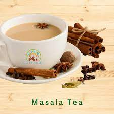

Masala Tea

Description
Everyone's favourite morning/evening drink which has many health benefits
as well. Best enjoyed in monsoon and in winter season.
Ingredients
- Tea powder(Chai patti)
- Sugar(quantity as per preference)
- Ginger
- Cloves
- Elaichi
Steps
- Add 2 table spoons of chai patti
- Add chai masala(ginger, cloves and elaichi)
- Add water and put it on light flame till water begins to boil
- Add milk
- Wait 10-15 minutes and your Masala Chai is ready
You can add sugar before or after chai is made, its completely your
preference